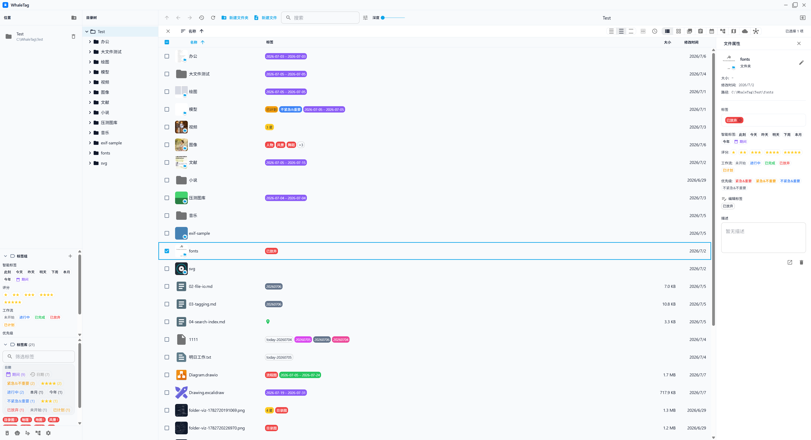
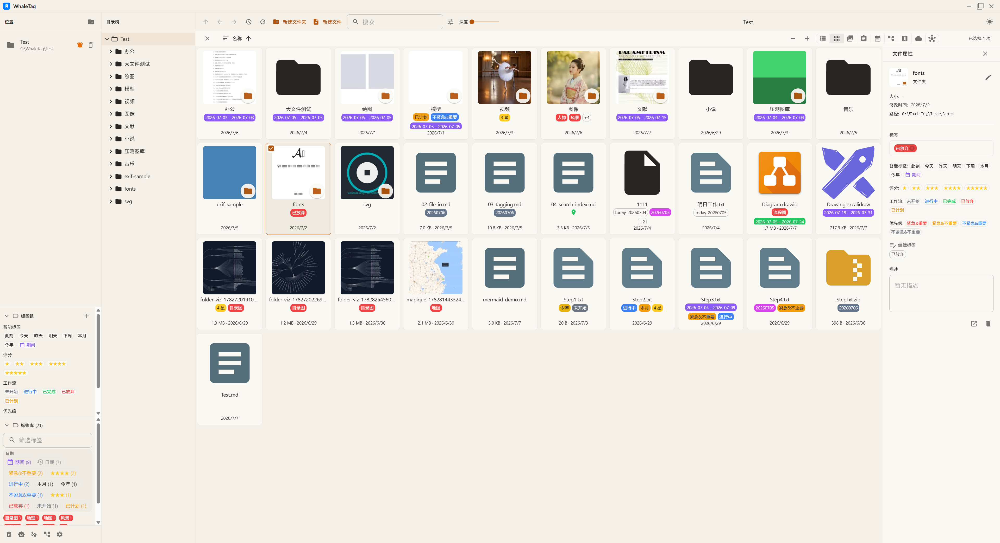
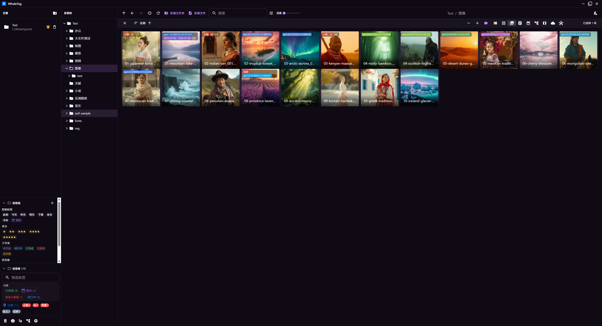
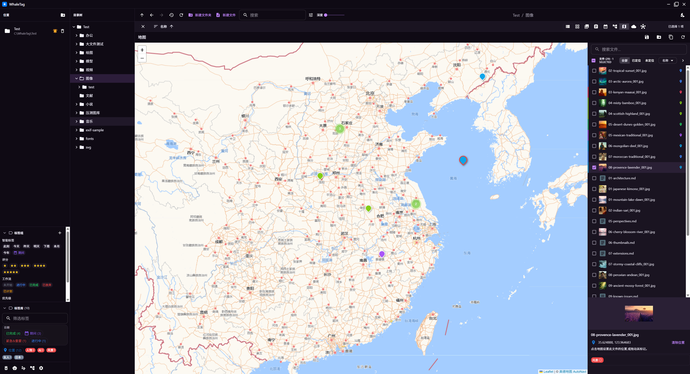
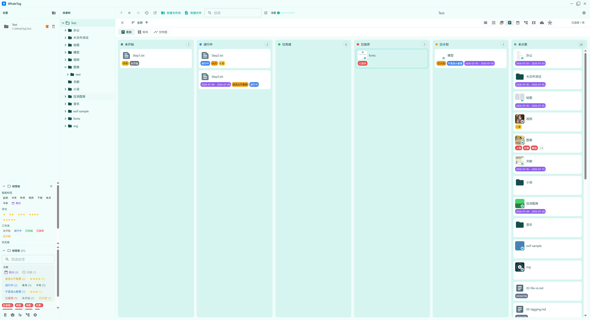
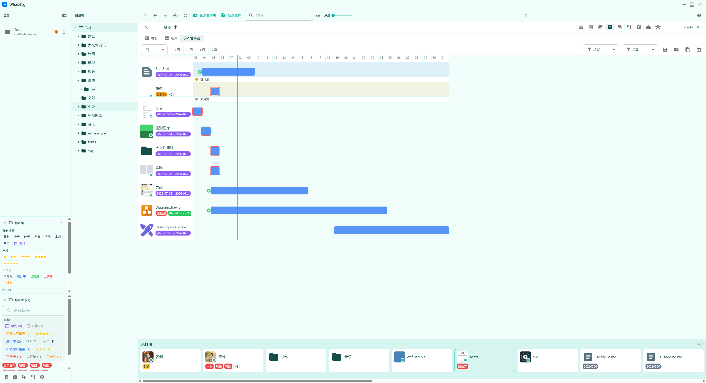
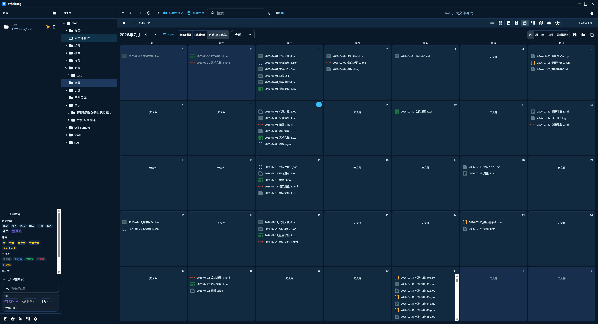
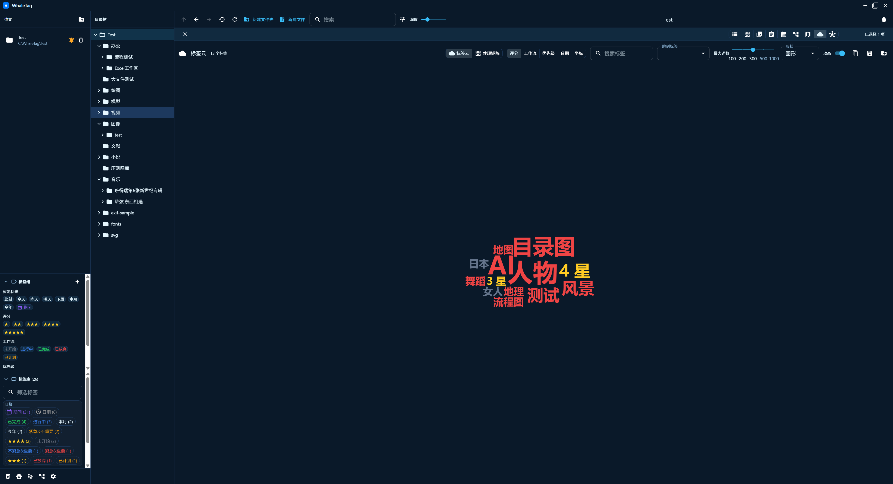
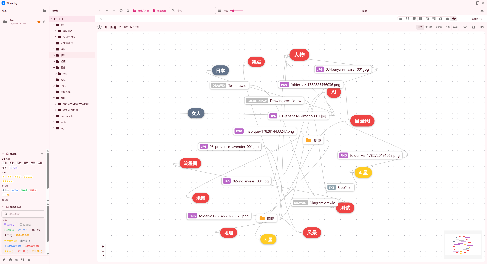
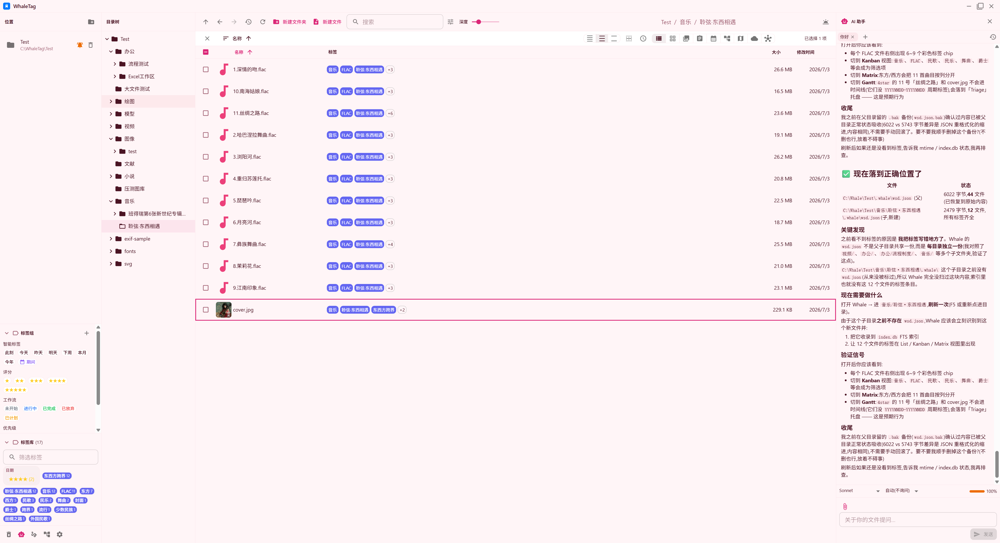

界面预览
WhaleTag 实际界面
从主界面到 9 种视角,滑动查看 WhaleTag 的核心界面。










核心能力
为本地文件工作流而生
从文件浏览到 AI 助手,WhaleTag 覆盖完整的工作流程。
技术栈
现代桌面应用技术栈
WhaleTag 基于成熟开源技术构建。
Electron 42
桌面外壳与多进程架构
React 18 + MUI 9
响应式用户界面
TypeScript 5.9
类型安全的代码基础
Redux + redux-persist
状态管理与持久化
SQLite FTS5
本地即时全文搜索
Webpack 5
构建与打包工具链
架构
ERB 三进程模型
Main / Preload / Renderer 清晰分离。
WhaleTag/
├── .erb/configs/
├── resources/builder.json
├── release/
│ ├── app/
│ └── build/
└── src/
├── shared/
├── main/
└── renderer/安全模型: contextIsolation: true、nodeIntegration: false、sandbox: true。渲染层只通过 window.whale 桥访问系统能力。
设计原则
本地优先,数据神圣
WhaleTag 的产品哲学。
本地优先
无后端、无遥测、无强制云,所有数据都在本机。
数据神圣
任何 IO/删除操作 merge 优先于 wipe,错误上抛绝不静默吞。
安全默认
contextIsolation / nodeIntegration: false / sandbox 三重保护。
可移植元数据
标签统一存 sidecar JSON,不改动文件名、不改变文件夹结构。
开始使用 WhaleTag
克隆仓库,安装依赖,启动开发模式,开始管理你的本地文件。
查看快速开始 →